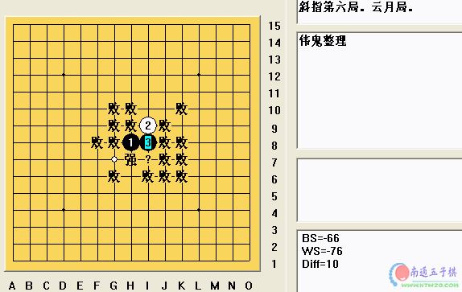

云月全局
首页
定式及研究
#1 云月全局 作者：有志青年 发表时间：2006-9-10 12:01:44

 云月全局.rar
云月全局.rar
#2 Re:云月全局 作者：酒鬼 发表时间：2006-9-10 16:02:03

#3 Re:云月全局 作者：uniwin 发表时间：2006-9-11 13:38:58
看看
#4 Re:云月全局 作者：icai 发表时间：2006-9-19 20:18:52
......
#5 Re:云月全局 作者：news 发表时间：2006-9-22 17:47:15
支持一下。楼主辛苦了！！
#6 Re:云月全局 作者：九命猫 发表时间：2006-9-26 13:00:55
学习
#7 Re:云月全局 作者：魔法少年 发表时间：2006-9-29 9:48:31
：）
#8 Re:云月全局 作者：yybns 发表时间：2006-10-5 17:50:31
:)
#9 Re:云月全局 作者：特磨道 发表时间：2006-10-8 11:09:06
很好很好！
#10 Re:云月全局 作者：寂静的海岛 发表时间：2006-10-16 11:05:41
新的云月谱，不错
#11 Re:云月全局 作者：ntren 发表时间：2006-10-16 15:36:47
好东西
#12 Re:云月全局 作者：金属玫瑰 发表时间：2006-10-17 17:25:01
多谢
#13 Re:云月全局 作者：daiyue 发表时间：2006-10-18 19:15:30
很好。
我下云月总是输的。
#14 Re:云月全局 作者：五子迷 发表时间：2006-10-20 10:18:18
........
#15 Re:云月全局 作者：小海龟 发表时间：2006-10-26 0:03:24
学习
#16 Re:云月全局 作者：小海龟 发表时间：2006-10-26 0:16:57
终于看到全谱了,呵呵 定式里介绍的不全面的点我这下都能学会了
#17 Re:云月全局 作者：nara 发表时间：2006-10-26 22:43:32
hao
#18 Re:云月全局 作者：天上掉个馅饼 发表时间：2006-10-29 6:07:27
看～～听说过一部分
#19 Re:云月全局 作者：lfc80 发表时间：2006-11-8 19:18:18
棋谱，看看！
#20 Re:云月全局 作者：527928 发表时间：2006-11-9 10:59:22
kan le
#21 Re:云月全局 作者：cjh199 发表时间：2006-11-13 20:42:55
xuexi
#22 Re:云月全局 作者：小桂子2 发表时间：2006-11-19 1:22:39
学习
#23 Re:云月全局 作者：天线宝宝 发表时间：2006-11-19 8:31:31
看看
#24 Re:云月全局 作者：偷贼的井盖 发表时间：2006-11-21 10:12:30
看一下
#25 Re:云月全局 作者：梦幻ゅ未来 发表时间：2006-11-23 17:54:08
很高兴来这里~~
#26 Re:云月全局 作者：shzzhy 发表时间：2006-11-23 20:12:56
支持一下。楼主辛苦了
#27 Re:云月全局 作者：小叶子 发表时间：2006-11-24 23:08:12
看看
#28 Re:Re:云月全局 作者：龙少天下第一 发表时间：2006-11-30 1:34:47
引用：
原文由 酒鬼 发表于 2006-9-10 16:02:03 :
#29 Re:云月全局 作者：623193 发表时间：2006-11-30 23:18:05

#30 Re:Re:云月全局 作者：晕了 发表时间：2006-12-5 16:45:58
真的是全谱吗?看看
#31 Re:云月全局 作者：潍县秀才 发表时间：2006-12-10 22:50:19
谢谢 小弟初来乍到请多关照
#32 Re:云月全局 作者：o心 发表时间：2006-12-15 14:31:22
多多指教！
#33 Re:云月全局 作者：紫风铃 发表时间：2006-12-18 6:10:37
谢谢
#34 Re:云月全局 作者：nifeng 发表时间：2006-12-18 22:20:05
zaijiezaili
#35 Re:云月全局 作者：其实不是我 发表时间：2006-12-19 1:39:43
我也要
#36 Re:云月全局 作者：学无止境 发表时间：2006-12-24 12:16:47
学习一下
#37 Re:云月全局 作者：zy 发表时间：2006-12-25 15:55:32
enhao
#38 Re:云月全局 作者：反西文 发表时间：2006-12-26 12:36:04
fffddddddd
#39 Re:云月全局 作者：zhy713 发表时间：2006-12-27 10:43:51
kan
#40 Re:云月全局 作者：落忆 发表时间：2006-12-28 12:40:43


#41 Re:云月全局 作者：棋乐穷 发表时间：2006-12-28 13:28:58
谢楼主
#42 Re:云月全局 作者：nyrick 发表时间：2006-12-28 15:30:22
好的
#43 Re:云月全局 作者：tslsh 发表时间：2006-12-30 16:53:07
辛苦啦~
#44 Re:云月全局 作者：天外天 发表时间：2006-12-31 13:17:15
真的要学的
#45 Re:云月全局 作者：舒亚0913 发表时间：2007-1-5 13:06:58
看一下
#46 Re:云月全局 作者：free 发表时间：2007-1-6 2:36:21
谢谢分享
#47 Re:云月全局 作者：无尽 发表时间：2007-1-6 9:00:20

#48 Re:云月全局 作者：连珠战神 发表时间：2007-1-6 14:32:47
好想看
#49 Re:云月全局 作者：edword 发表时间：2007-1-6 21:34:31
我想看！
#50 Re:云月全局 作者：elvis 发表时间：2007-1-6 22:32:42
规划
#51 Re:云月全局 作者：卓家公子 发表时间：2007-1-9 11:35:53
有兴趣看看
#52 Re:云月全局 作者：井然 发表时间：2007-1-12 15:39:49
费事
#53 Re:云月全局 作者：小宇 发表时间：2007-1-13 10:01:09

#54 Re:云月全局 作者：力争碰 发表时间：2007-1-18 20:47:50
你哈哦啊 啊
#55 Re:云月全局 作者：昔日重来 发表时间：2007-1-19 18:52:05
顶！！！！！！！！！！！！
#56 Re:云月全局 作者：流星 发表时间：2007-1-21 16:07:00
 找到不少东西
找到不少东西
#57 Re:云月全局 作者：艾危 发表时间：2007-1-23 3:09:46
在学云月，看看
#58 Re:云月全局 作者：西怪 发表时间：2007-1-24 14:27:57
ddddd
#59 Re:云月全局 作者：dream 发表时间：2007-2-1 17:29:17
ddd
#60 Re:云月全局 作者：吾本沉默 发表时间：2007-8-11 11:16:04
很好很好。
#61 Re:云月全局 作者：黄药师 发表时间：2007-8-11 14:17:07
这个全局也不是很全啊！
#62 Re:云月全局 作者：南京青青子衿 发表时间：2007-8-18 20:23:03
谢谢这个叫伟鬼的同志，费了这么大功夫让我们坐享其成了！
#63 Re:云月全局 作者：平淡是真03 发表时间：2007-9-19 11:58:02
看不到云月棋谱的啊怎么才能看到的啊
谁告诉我 啊
#64 Re:云月全局 作者：平淡是真03 发表时间：2007-9-19 12:03:11
看不到棋谱啊谁告诉我啊，我QQ59972184
#65 Re:云月全局 作者：weigui 发表时间：2007-9-19 23:19:28
这个是垃圾货,好象是偶2002年前的东西,而且还有不少是错误的东西.
#66 Re:云月全局 作者：剃刀 发表时间：2007-11-2 13:52:37
研究一下
#67 Re:云月全局 作者：风无痕 发表时间：2007-11-3 0:27:42
学习
#68 Re:云月全局 作者：零点 发表时间：2007-11-7 8:33:31
学习
#69 Re:云月全局 作者：古道东疯 发表时间：2007-11-21 19:00:44
大有收获， 感谢老师们的劳动！！！
#70 Re:云月全局 作者：先期 发表时间：2008-6-1 13:52:02
下载后全是乱码 ！哭！！！